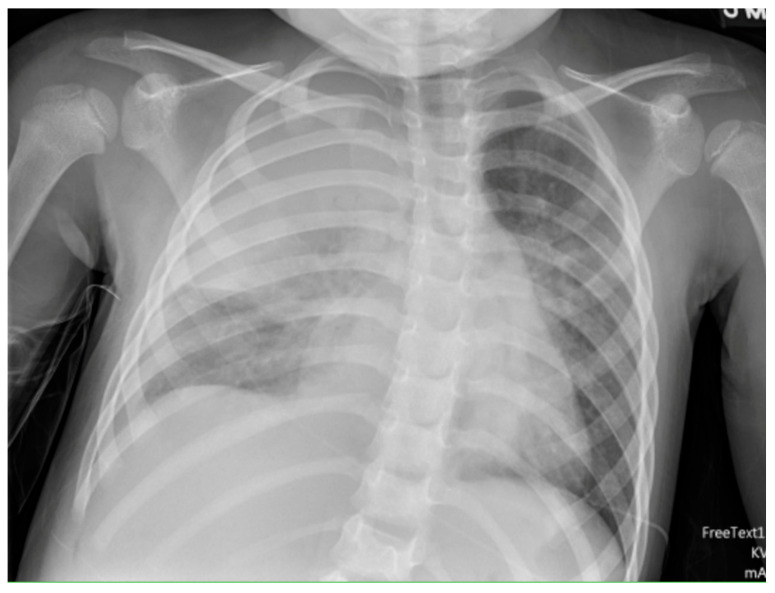
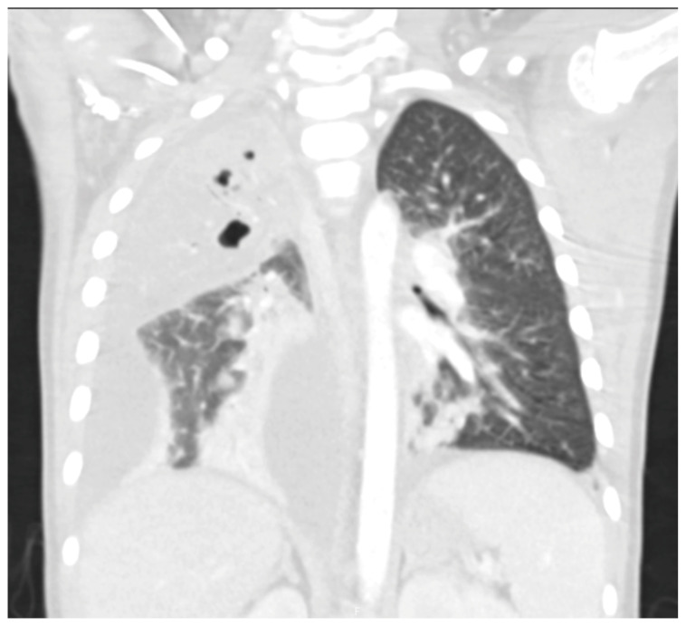
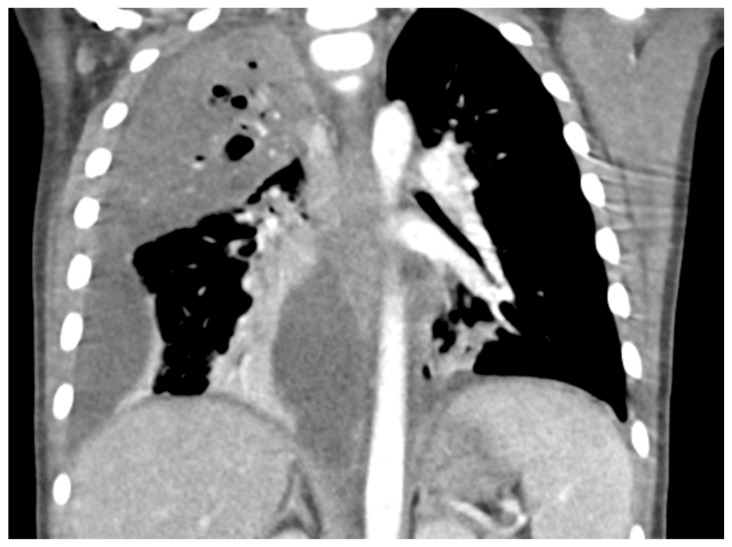
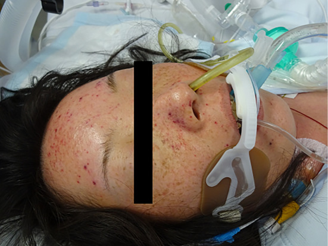
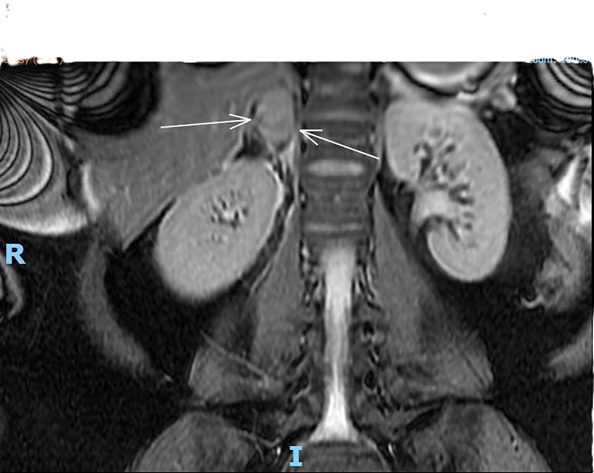

6173 — Nhiễm khuẩn huyết tối cấp sau cắt lách ở trẻ (OPSI): "sốt ở trẻ không lách là 24 giờ vàng" / Overwhelming post-splenectomy infection in children
Tags: pattern:khong-lach pattern:viem-phoi-hoai-tu pattern:empyema pattern:xuat-huyet-thuong-than pattern:purpura-fulminans vung:lach vung:phoi vung:mang-phoi vung:thuong-than score:Light-criteria protocol:X-quang-nguc protocol:sieu-am-phoi protocol:CT-nguc-can-quang
Mức chắc chắn (certainty): tổng hợp y văn (literature synthesis) — ghép 2 bài tổng quan về OPSI (Cureus 2020, PMC7059871, CC BY; Infect Drug Resist 2019, PMC6748314, CC BY-NC), 1 loạt ca OPSI (Cureus 2020, PMC7505613, CC BY), 1 ca purpura fulminans do phế cầu ở người cắt lách (Intern Med 2017, PMC5337479, CC BY-NC-ND — chỉ dùng ảnh nguyên bản), 1 tổng quan viêm phổi hoại tử nhi (Children 2025, PMC12468505, CC BY — 3 ảnh), 1 nghiên cứu tiêm chủng–biến chứng phổi nhi (Life 2026, PMC13208318, CC BY), 1 tổng quan nhiễm trùng trong bệnh hồng cầu hình liềm (Haematologica 2025, PMC11873697, CC BY-NC), 1 ca xuất huyết thượng thận (J Clin Gynecol Obstet 2025, PMC12788810, CC BY-NC — ảnh minh hoạ hình thái, không phải ca OPSI) và 1 thử nghiệm can thiệp tuân thủ dự phòng (Infection 2023, PMC10665246, CC BY). Nhóm không có bệnh nhân của mình.
Câu chốt: OPSI không phải "nhiễm khuẩn nặng hơn bình thường" mà là nhiễm khuẩn huyết mất kiểm soát vì thiếu bộ lọc lách — bệnh cảnh 12–24 giờ từ sốt nhẹ tới tử vong. Bốn số phải thuộc: (1) tỉ lệ mắc 0,1–0,5% người cắt lách, 0,13/100 người-năm, tử vong tới 50% (một số nguồn 50–70%); (2) Streptococcus pneumoniae gây 50–90% ca, tử vong do phế cầu tới 60%; (3) nguy cơ cao nhất 2–3 năm đầu nhưng kéo dài suốt đời — đã có ca 26 năm và 15 năm sau cắt lách; (4) trẻ hồng cầu hình liềm < 3 tuổi có 10 ca phế cầu/100 người-năm, tử vong ca bệnh 30% — dù vậy tiêm chủng đầy đủ làm giảm bệnh phế cầu xâm lấn tới 93,4% ở trẻ < 5 tuổi.
1. Tổng quan bệnh học – cơ chế hình ảnh (TẠI SAO)
1.1 Lách làm gì mà thiếu lách lại chết nhanh
- Lách = bộ lọc tuần hoàn + nhà máy kháng thể chống vỏ polysaccharide. Mô lách trắng (25% thể tích lách) chứa nang lympho và vùng rìa (marginal zone); mô lách đỏ (75%) có dây Billroth và xoang tĩnh mạch, nơi hồng cầu phải chui qua khe nội mô để về tuần hoàn.
- Ba chức năng mất đi sau cắt lách (PMC6748314):
- Lọc cơ học vi khuẩn khỏi máu;
- Opsonin hoá nhờ kháng thể và bổ thể — không có lách thì vi khuẩn vỏ polysaccharide (phế cầu, não mô cầu, H. influenzae týp b) kháng thực bào;
- "Pitting" — cắt bỏ thể vùi trong hồng cầu (thể Howell–Jolly, hốc hồng cầu, siderocyte) mà không phá huỷ cả tế bào.
- Hậu quả miễn dịch định lượng: giảm tế bào B nhớ IgM và giảm đáp ứng với vắc-xin polysaccharide (không phụ thuộc tuyến ức); tỉ lệ tế bào B giảm rõ 150 ngày sau cắt lách. Đây là lý do vắc-xin cộng hợp (conjugate) hiệu quả hơn vắc-xin polysaccharide ở người không lách.
- Vì sao chết trong 24 giờ: vi khuẩn có vỏ nhân đôi nhanh trong máu (phế cầu có thể từ 10³ → 10⁸ CFU/mL trong vài giờ ở mô hình động vật), gây bùng phát cytokine, DIC, suy thượng thận cấp và hoại tử chi — đó chính là các hình thái mà bác sĩ chẩn đoán hình ảnh nhìn thấy: viêm phổi hoại tử, mủ màng phổi, xuất huyết thượng thận hai bên, purpura fulminans.
1.2 Vì sao hình ảnh học lại quan trọng trong một bệnh "nhiễm trùng"
- OPSI là chẩn đoán lâm sàng–vi sinh, nhưng ổ nhiễm khuẩn khởi phát thường ở phổi và diễn tiến hoại tử nhanh hơn người có lách: phế cầu serotype 3 nổi bật trong viêm phổi hoại tử nhi (PMC12468505).
- Viêm phổi hoại tử (necrotizing pneumonia, NP) chiếm 3–7% ca viêm phổi cộng đồng nhập viện ở trẻ và tới 40% ca viêm phổi có biến chứng; thông khí nhân tạo 28%, tử vong 0–5% (cao hơn ở nhũ nhi và trẻ có bệnh nền) — tức là biến chứng phổi tự nó đã nặng, và ở trẻ không lách ngưỡng can thiệp còn thấp hơn.
- Trong một loạt 144 trẻ viêm phổi cộng đồng nhập viện (Jerusalem 2001–2010), 40% có mủ màng phổi và 20% có viêm phổi hoại tử — hai hình thái này thường đi cùng nhau và cùng là "cửa vào" của OPSI.
2. Mẫu hình + chẩn đoán phân biệt theo vị trí (gamut)
- Phổi – màng phổi (hay gặp nhất ở trẻ): viêm phổi hoại tử (ổ giảm mật độ không ngấm thuốc trong vùng đông đặc + pneumatocele), mủ màng phổi (split pleura), áp-xe phổi, rò phế quản–màng phổi.
- Tuyến thượng thận: xuất huyết thượng thận hai bên (hội chứng Waterhouse–Friderichsen) — nguyên nhân tử vong trong vài giờ nếu không nghĩ tới; gặp trong nhiễm phế cầu, não mô cầu, Pseudomonas.
- Mô mềm – chi: purpura fulminans (ban xuất huyết hoại tử đối xứng do DIC + thiếu protein C), viêm cân mạc hoại tử (đã có ca do phế cầu serotype 7C, PMC13521636).
- Ổ bụng: không thấy lách trên CT; splenosis giả di căn (bài 192); viêm phúc mạc phế cầu (hiếm, hay ở trẻ nữ).
- Gợi nhớ nhanh — "SỐT + KHÔNG LÁCH": Streptococcus pneumoniae, Other encapsulated (meningococcus, Hib, Capnocytophaga sau chó mèo cắn), Trauma/functional asplenia (hồng cầu hình liềm), Absent spleen on imaging, Surgery gần đây (cắt lách < 30 ngày).
3. Bảng so sánh phân biệt (ma trận đối chiếu)
| Thực thể (entity) | Hình ảnh điển hình | Chốt vào (rule-in) | Chốt loại (rule-out) | Gợi ý xác nhận |
|---|---|---|---|---|
| OPSI – viêm phổi hoại tử do phế cầu | Đông đặc thuỳ + ổ giảm mật độ không ngấm thuốc + pneumatocele (bóng khí thành mỏng) ± tràn dịch | Không có lách trên CT + sốt < 24 giờ + ổ hoại tử trong đông đặc | Đông đặc đồng nhất, không hang, không tràn dịch → viêm phổi thuỳ đơn thuần | Cấy máu trước kháng sinh; CT ngực có cản quang |
| Mủ màng phổi (empyema) | Split pleura: hai lá màng phổi dày, ngấm thuốc, tách nhau bởi dịch; vách/ổ khu trú | Hai lá màng phổi ngấm thuốc tách nhau + dịch vách | Dịch tự do, màng phổi mỏng < 1 mm → tràn dịch đơn thuần | Siêu âm phổi (vách, khu trú); chọc dịch: pH < 7,20, glucose < 40 mg/dL, LDH > 1.000 IU/L |
| Xuất huyết thượng thận hai bên (Waterhouse–Friderichsen) | Tuyến to, không ngấm thuốc, tỉ trọng không đồng nhất; MRI T2 tăng tín hiệu hỗn hợp | Sốt + tụt huyết áp kháng dịch + hai tuyến thượng thận to, không ngấm | Tuyến bình thường/thuỷ hoá đều hai bên → không phải cấp | CT bụng có cản quang; cortisol/metyrapone cấp cứu |
| Purpura fulminans | Ban xuất huyết đối xứng, hoại tử đầu chi; không có ổ đặc hiệu trên CT | Ban hoại tử + DIC (tiểu cầu giảm, fibrinogen giảm) + không lách | Ban dạng sởi, mày đay, hồng ban → không phải purpura fulminans | Đông máu toàn bộ, protein C/S, cấy máu |
| Splenosis giả di căn | Nhiều nốt giống nhu mô lách, ngấm thuốc kiểu lách, trong phúc mạc/màng phổi | Tiền sử vỡ/cắt lách + nốt đồng tín hiệu lách ở mọi thì | Nốt có washout, xâm lấn, hạch → nghĩ di căn | ⁹⁹ᵐTc-HDRBC/SPECT-CT (bài 192) |

X-quang ngực thẳng: đông đặc thuỳ trên phổi phải + mờ màng phổi phải lượng nhiều, đẩy nhẹ trung thất. Nguồn: Ness-Cochinwala M, Totapally BR — Children 2025, PMC12468505 Fig. 3, CC BY 4.0. Ảnh nguyên bản.4. Protocol chụp + hệ phân độ/điểm chuẩn hoá
4.1 Khi nghi OPSI — thứ tự không được đảo
- Cấy máu 2 vị trí TRƯỚC kháng sinh, lactate, glucose, đông máu, cortisol (nếu tụt huyết áp).
- Kháng sinh trong 60 phút đầu (ceftriaxone ± vancomycin theo dịch tễ); không chờ hình ảnh.
- Hình ảnh chỉ để tìm ổ cần dẫn lưu: X-quang ngực → siêu âm phổi tại giường → CT ngực có cản quang khi nghi hoại tử/mủ màng phổi; CT bụng khi tụt huyết áp không giải thích được.
- Không chọc dò tủy sống khi chưa ổn định huyết động (nguy cơ tụt huyết áp do DIC).
4.2 Ngưỡng phân độ có số
- Light criteria cho dịch màng phổi: dịch pH < 7,20, glucose < 40 mg/dL**, **LDH > 1.000 IU/L (hoặc > 2/3 giới hạn trên của LDH huyết thanh) → cần dẫn lưu; mủ đặc thì dẫn lưu ngay.
- Viêm phổi hoại tử: hoại tử > 50% thể tích một thuỳ = phổi hoại tử (pulmonary gangrene) → cân nhắc cắt thuỳ; pneumatocele thường tự tiêu sau vài tuần, không can thiệp chỉ vì có bóng khí.
- Nguy cơ OPSI theo thời gian: cao nhất 2–3 năm đầu; trẻ < 2 tuổi và cắt lách vì bệnh ác tính có nguy cơ cao nhất.
4.3 Phòng bệnh — phần "hình ảnh" mà bác sĩ CĐHA phải kích hoạt
flowchart TD
A[CT/X-quang: KHÔNG thấy lách] --> B{Đã ghi vào báo cáo?}
B -->|Chưa| C[Ghi rõ: không có lách / lách teo calci hoá]
B -->|Rồi| D[Kích hoạt nhắc dự phòng OPSI]
C --> D
D --> E[Vắc-xin: PCV13 + PPV23, MenACWY, MenB, Hib, cúm hằng năm]
D --> F[Kháng sinh dự phòng hằng ngày]
D --> G[Kháng sinh dự phòng khi sốt + thẻ báo y tế]
E --> H[Nguy cơ vẫn còn suốt đời: tái khám mỗi lần sốt]
F --> H
G --> H
- Thời điểm tiêm: 14 ngày trước cắt lách chương trình hoặc 14 ngày sau cắt lách cấp cứu (tiêm quá sớm → đáp ứng kém).
- Bộ vắc-xin: PCV13 rồi PPV23 (nhắc lại ≥ 8 tuần sau PCV13), MenACWY, MenB, Hib, cúm hằng năm.
- Kháng sinh dự phòng: hằng ngày ≥ 3 năm sau cắt lách (hướng dẫn Úc/Spleen Australia), suốt đời nếu nguy cơ cao (bệnh ác tính, suy giảm miễn dịch, hồng cầu hình liềm); luôn mang kháng sinh "dự phòng khi sốt" và thẻ báo y tế.
- Hiệu quả thực tế: ở 69 trẻ viêm phổi cộng đồng có biến chứng, tiêm chủng phế cầu đầy đủ là yếu tố bảo vệ độc lập với mủ màng phổi (OR hiệu chỉnh 0,19; 95% CI 0,06–0,61), và trẻ không tiêm nằm viện 17 vs 9,5 ngày (p = 0,016) (PMC13208318).
- Tuân thủ lại rất kém: 85% người cắt lách không biết mình tăng nguy cơ nhiễm trùng; can thiệp giáo dục có cấu trúc nâng điểm tuân thủ từ 3,73 → 7,70/10 (PMC10665246).
5. Biến thể bình thường và cạm bẫy
- Lách teo calci hoá trong hồng cầu hình liềm ("autosplenectomy") — trên CT là đám calci nhỏ ở hố lách, không phải "không có lách bẩm sinh"; chức năng lách đã mất từ rất sớm, và trẻ vẫn cần dự phòng như người cắt lách.
- Lách phụ / splenosis — mô lách còn lại có chức năng một phần nhưng không đủ để loại trừ OPSI; đừng trấn an gia đình chỉ vì "còn mô lách" (bài 192).
- Thể Howell–Jolly âm tính không loại trừ giảm chức năng lách — xét nghiệm này độ nhạy thấp khi còn mô lách nhỏ; quyết định dự phòng dựa trên bệnh nền + hình ảnh, không dựa trên một lam máu.
- Sốt "chỉ là siêu vi" — bẫy chết người: trẻ không lách sốt > 38,5 °C phải được khám, cấy máu và kháng sinh ngay, kể cả khi trẻ trông khoẻ.
- Bạch cầu bình thường hoặc thấp không loại trừ OPSI — trong nhiễm khuẩn huyết tối cấp, bạch cầu có thể giảm do tiêu thụ; ca nguyên văn có 22,2 × 10³/µL với 92,8% neutrophil nhưng ca khác lại không tăng.
- Pneumatocele xuất hiện MUỘN (ngày 3–7) sau đông đặc — đừng chẩn đoán "hang lao/áp-xe" trên phim chụp sớm; và đừng chọc dẫn lưu một pneumatocele (không phải ổ mủ).
- Dịch màng phổi "đáp ứng kháng sinh" vẫn có thể là mủ — siêu âm thấy vách/khu trú thì phải chọc và xét nghiệm Light, không chờ CT.
6. Tự lượng giá — Blind Quiz
Ca 1 — Trẻ 4 tuổi, sốt 39,5 °C, ho 2 ngày, đã cắt lách vì hồng cầu hình cầu 3 năm trước. X-quang ngực thẳng:
- Gợi ý lâm sàng: trẻ không lách, không sốt rét, không tiêm nhắc; mạch nhanh, chi ấm.
- Câu hỏi: Mờ ở đâu? Có đẩy trung thất không? Ba chẩn đoán phân biệt? Việc đầu tiên phải làm trước khi đẩy trẻ đi CT?
Bấm để hiện đáp án (findings + chẩn đoán)
- Dấu hiệu: đông đặc thuỳ trên phổi phải + mờ màng phổi phải lượng nhiều, trung thất hơi lệch trái; không thấy khí trong mô mềm.
- Chẩn đoán: viêm phổi + tràn dịch cận viêm phổi ở trẻ không lách — phải coi là OPSI cho tới khi loại trừ. Phân biệt: viêm phổi thuỳ đơn thuần, mủ màng phổi, viêm phổi hoại tử.
- Việc đầu tiên: cấy máu + kháng sinh trong 60 phút, không chờ CT. Sau đó siêu âm phổi tại giường.
- Nguồn ảnh: Ness-Cochinwala M, Totapally BR — Children 2025, PMC12468505 Fig. 3, CC BY 4.0.
Ca 2 — Cùng bệnh nhi, sau 48 giờ sốt dai dẳng, CT ngực có cản quang:

- Câu hỏi: Trong vùng đông đặc có gì bất thường? Đó là hang, áp-xe hay hoại tử? Có chỉ định dẫn lưu màng phổi không?
Bấm để hiện đáp án
- Dấu hiệu: khối đông đặc lớn thuỳ trên phải với nhiều ổ khí nhỏ (pneumatocele) và vùng giảm mật độ không ngấm thuốc; dịch màng phổi phải lượng lớn.
- Chẩn đoán: viêm phổi hoại tử (necrotizing pneumonia) + tràn dịch cận viêm phổi phức tạp. Hoại tử khác áp-xe ở chỗ nhiều ổ nhỏ, bờ không rõ, không có vỏ; pneumatocele là di chứng, không chọc.
- Dẫn lưu: có, nếu dịch khu trú/vách trên siêu âm hoặc pH < 7,20 / glucose < 40 mg/dL / LDH > 1.000 IU/L.
- Nguồn ảnh: Ness-Cochinwala M, Totapally BR — Children 2025, PMC12468505 Fig. 4, CC BY 4.0.
Ca 3 — Cùng bệnh nhi, cửa sổ trung thất:

- Câu hỏi: Hai lá màng phổi có tách nhau không? Dấu này tên gì và nói lên điều gì về khả năng dẫn lưu?
Bấm để hiện đáp án
- Dấu hiệu: màng phổi tạng và thành đều dày, ngấm thuốc, tách nhau bởi dịch = split pleura sign; kèm đông đặc phổi phải và ổ khí trong nhu mô.
- Ý nghĩa: mủ màng phổi giai đoạn fibrinopurulent — dẫn lưu đơn thuần có thể thất bại, cần ống dẫn lưu + fibrinolytic hoặc VATS.
- Nguồn ảnh: Ness-Cochinwala M, Totapally BR — Children 2025, PMC12468505 Fig. 5, CC BY 4.0.
Ca 4 — Người lớn 70 tuổi (ca nguyên văn), sốt 1 ngày rồi lơ mơ; tiền sử cắt lách 10 năm, chưa từng tiêm phế cầu:

- Câu hỏi: Ban này gọi là gì? Cơ chế? Hai xét nghiệm đông máu nào sẽ bất thường?
Bấm để hiện đáp án
- Dấu hiệu: purpura không căng da (non-palpable) lan mặt–thân–chi, kèm tiểu cầu giảm nặng và fibrinogen giảm → purpura fulminans do DIC, trong bối cảnh OPSI do phế cầu.
- Cơ chế: nhiễm khuẩn huyết tối cấp → hoạt hoá đông máu + tiêu thụ protein C/S → huyết khối vi mạch ở da → hoại tử.
- Điều trị: kháng sinh ngay (ceftriaxone), hồi sức, sản phẩm máu; đây là ca sống sót nhưng là ngoại lệ.
- Nguồn ảnh: Sakai K, Kuriyama A — Intern Med 2017, PMC5337479 Picture 1, CC BY-NC-ND 4.0 (ảnh nguyên bản, không cắt/ghép).
Ca 5 — Bệnh nhi tụt huyết áp kháng dịch, không tìm thấy ổ nhiễm; MRI bụng lát vành T2:

- Câu hỏi: Tạng nào to bất thường (mũi tên)? Tại sao tụt huyết áp không đáp ứng dịch? Cần làm gì ngay?
Bấm để hiện đáp án
- Dấu hiệu: tuyến thượng thận phải to, tín hiệu T2 hỗn hợp không đồng nhất (mũi tên) — hình thái xuất huyết thượng thận.
- Chẩn đoán: xuất huyết thượng thận hai bên / Waterhouse–Friderichsen trong nhiễm khuẩn huyết tối cấp; mất cortisol → sốc kháng catecholamine.
- Xử trí: hydrocortisone tĩnh mạch ngay + kháng sinh + hồi sức; không chờ kết quả cortisol.
- Lưu ý trung thực nguồn: ảnh này lấy từ ca xuất huyết thượng thận tự phát trong thai kỳ (người lớn), không phải ca OPSI — chỉ dùng để nhận diện hình thái, không dùng để chứng minh tỉ lệ.
- Nguồn ảnh: Memon M, Wilson D, Okolo I, Wang A — J Clin Gynecol Obstet 2025, PMC12788810 Fig. 1, CC BY-NC 4.0.
Bài liên quan chéo
- 6154 – Sỏi mật ở trẻ có bệnh tan máu: cắt túi mật cùng lúc cắt lách
- 192 – Splenosis & lách phụ sau cắt lách
- 616 – Biến chứng viêm phổi nhi: mủ màng phổi & hoại tử phổi
- 1860 – Chấn thương lách ở trẻ em: NOM/SAE và ngưỡng mổ
- 649 – Khí trung thất & khí dưới da ở trẻ
Không dùng để chẩn đoán độc lập khi chưa có người hướng dẫn.